Mineiro Lanche • Guia de pagamentos
Pagamentos online e ao receber • edição de 21/10/2026
Guia visual de pagamentos
Pagamento online com e-mail opcional, dinheiro com troco, recebimento na loja e orientação para o motoboy.
TELAS DO SITE + TELAS OFICIAIS DO MERCADO PAGO
Formas liberadas no checkout
| Forma | Como está configurada |
|---|
| Pix | Disponível. Siga as instruções exibidas no Mercado Pago para concluir o pagamento. |
| Cartão de crédito | À vista, em 1 parcela. Visa, Mastercard, Elo, American Express e cartão Mercado Pago (MP Card). |
| Cartão de débito | Elo, quando oferecido no checkout para o comprador. |
| Cartões pré-pagos | Visa, Mastercard e Elo, conforme disponibilidade no checkout. |
| Saldo Mercado Pago | Com o saldo da conta do comprador, quando a opção for exibida. |
| Na entrega ou retirada | Escolha Dinheiro e informe o troco. Para outro meio presencial, confira com a loja. Veja as páginas 13 a 16. |
Disponibilidade consultada na API de produção em 20/10/2026. As opções efetivamente exibidas dependem da conta do comprador, do cartão e das regras do Mercado Pago.
No pagamento online
Boleto e pagamento por lotérica/caixa eletrônico estão bloqueados. Crédito em 1 vez. O e-mail no site é opcional; o Mercado Pago poderá solicitar dados ao concluir a compra.
Online: aguarde a aprovação. Ao receber: o pedido segue com o valor a receber.
TELAS DO SISTEMA COM DADOS DE DEMONSTRAÇÃO • Pedidos e pagamentos simulados em ambiente local; nenhuma cobrança real.
Exemplo: Ana escolhe 1 X-Burguer por R$ 16,90, sem combo e sem adicionais.
1 Personalize o lanche
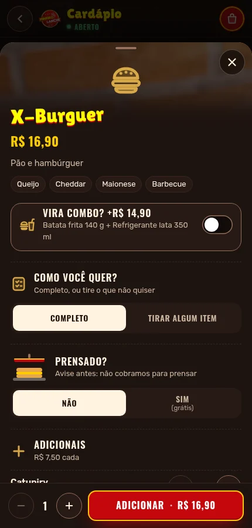
Abra o lanche pelo nome ou foto. Escolha os opcionais e toque em Adicionar · R$ 16,90, na parte inferior.2 Confira a sacola
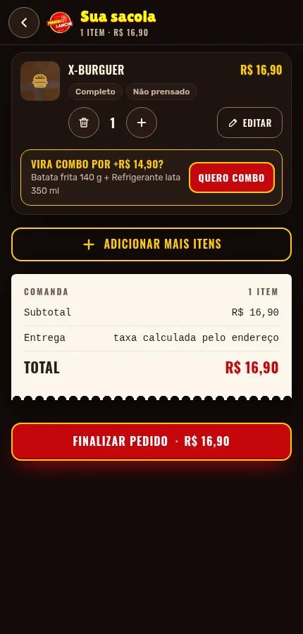
Confira item, quantidade e valor. Para avançar, toque em Finalizar pedido · R$ 16,90. A entrega será definida na próxima tela.Os preços das capturas são exemplos desta edição. O valor válido é o exibido no pedido atual.
TELAS DO SISTEMA COM DADOS DE DEMONSTRAÇÃO • Pedidos e pagamentos simulados em ambiente local; nenhuma cobrança real.
Exemplo preenchido para Retirada no local: o pedido será buscado na loja, sem taxa de entrega.
Primeiro: telefone e identificação
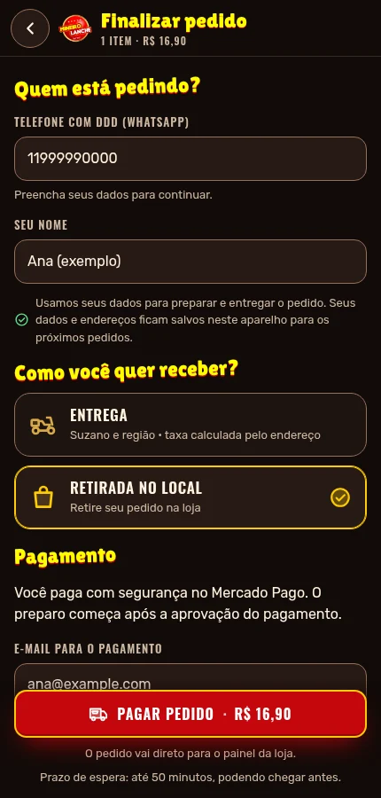
Comece pelo telefone com DDD. Confira os dados recuperados ou informe seu nome. Selecione Retirada no local para buscar na loja.Depois: escolha como pagar
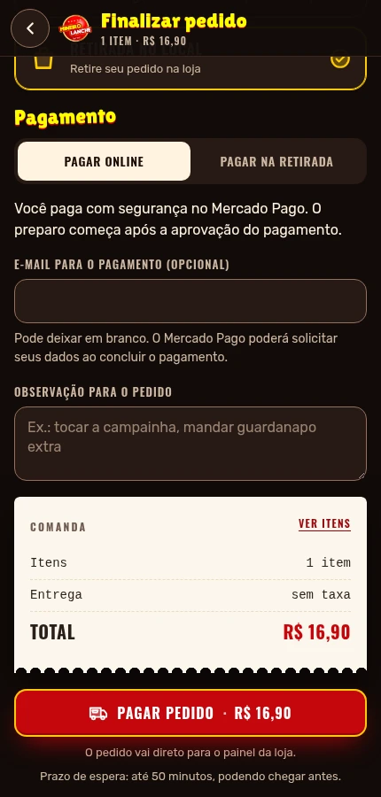
Selecione Pagar online. O e-mail é opcional: pode deixar em branco. Confira o total e toque em Pagar pedido. Para dinheiro, siga a página 13.Se escolher Entrega: informe CEP, rua e número; confirme o ponto no mapa se solicitado. Se houver endereços salvos, escolha um ou toque em Adicionar novo endereço. Confira a taxa e o total antes de pagar.
CAPTURA DA DEMONSTRAÇÃO OFICIAL DO MERCADO PAGO • Exemplo genérico, não é um pedido do Mineiro.
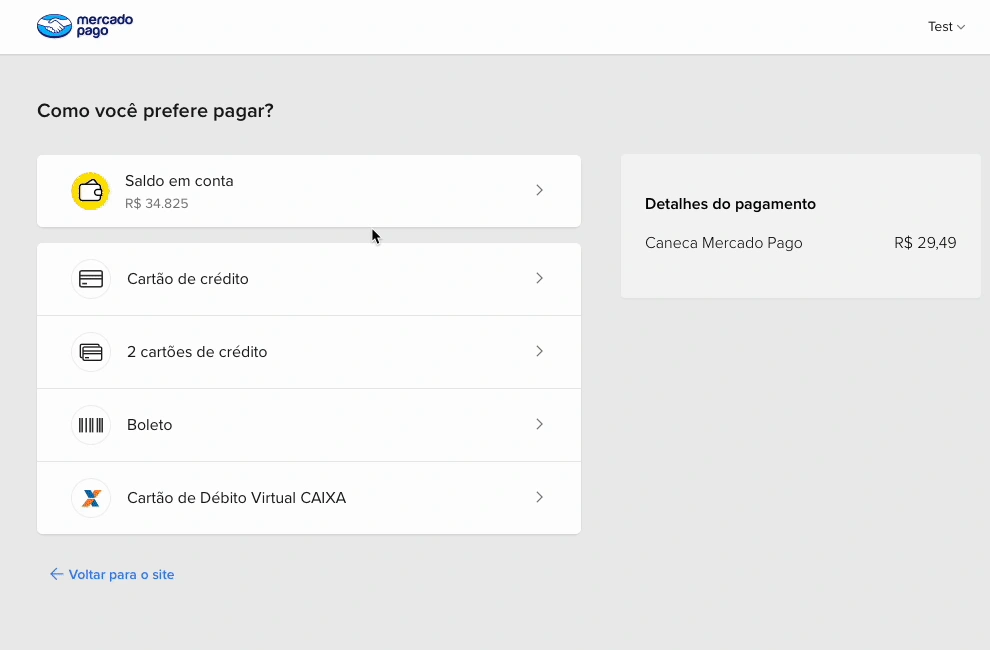
Escolha como deseja pagar
- Confira o valor no resumo à direita.
Na demonstração aparece uma caneca por R$ 29,49. Na sua compra devem aparecer os dados e o total do seu pedido do Mineiro.
- Clique na forma desejada.
Para seguir o exemplo das próximas páginas, escolha Cartão de crédito. Se já aparecer um meio sugerido, use Escolher outro meio de pagamento para ver as alternativas.
A lista da imagem é genérica. Ela mostra boleto e opções extras que não representam a configuração da loja. No Mineiro, boleto está bloqueado e o crédito é em 1 vez. Consulte as formas da página 1.
Se escolher Pix, quando oferecido: siga as instruções do próprio checkout. No celular, copie o código e use o Pix Copia e Cola no aplicativo do banco. Confira valor e recebedor antes de confirmar.
Fonte: Mercado Pago Developers — Checkout Pro. Recorte de tela da demonstração oficial em português, consultada em 20/10/2026. A aparência e as opções podem variar no checkout atual.
CAPTURA DA DEMONSTRAÇÃO OFICIAL DO MERCADO PAGO • Exemplo genérico, não é um pedido do Mineiro.
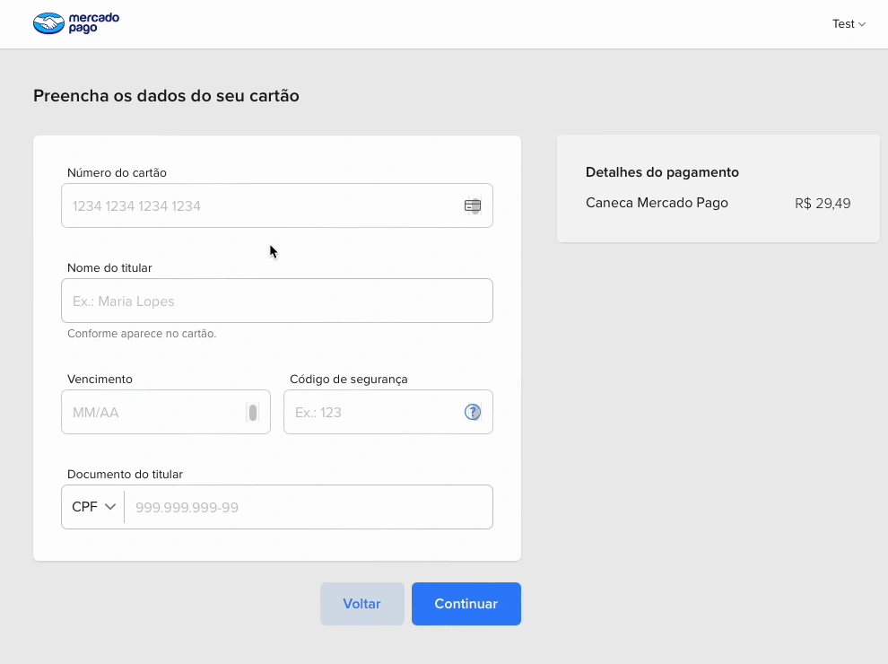
Preencha os dados do cartão
Informe número do cartão, nome do titular, vencimento, código de segurança e documento do titular nos campos indicados pelo Mercado Pago.
Depois, clique em Continuar, no botão azul abaixo do formulário. Se precisar escolher a condição de pagamento, use a opção em 1 vez.
Digite os dados somente no checkout seguro do Mercado Pago. A imagem mostra campos de exemplo; use os dados do titular do cartão na compra.
Fonte: Mercado Pago Developers — Checkout Pro. Recorte de tela da demonstração oficial em português, consultada em 20/10/2026. A aparência e as opções podem variar no checkout atual.
CAPTURA DA DEMONSTRAÇÃO OFICIAL DO MERCADO PAGO • Exemplo genérico, não é um pedido do Mineiro.
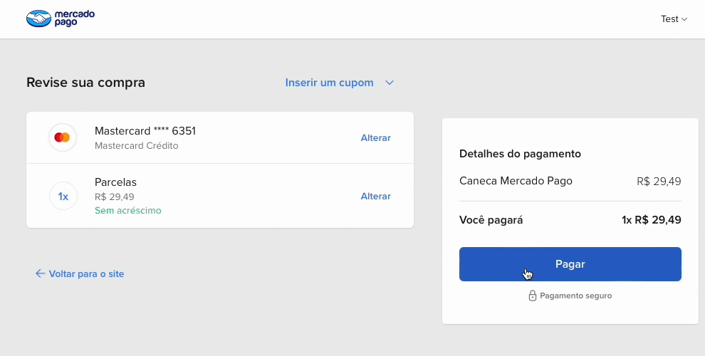
Confira antes de confirmar
- Verifique o cartão e a condição em 1 vez.
O cartão aparece com parte dos números ocultos. Se estiver incorreto, clique em Alterar.
- Confira o total em “Você pagará”.
Na compra do Mineiro, o valor deve corresponder ao total da comanda, incluindo a taxa de entrega quando houver.
- Clique em Pagar.
O botão azul fica no quadro de detalhes do pagamento, à direita. Aguarde o processamento antes de tentar novamente.
O valor de R$ 29,49 e a caneca pertencem à demonstração oficial. Não são valores ou produtos do cardápio do Mineiro.
Fonte: Mercado Pago Developers — Checkout Pro. Recorte de tela da demonstração oficial em português, consultada em 20/10/2026. A aparência e as opções podem variar no checkout atual.
CAPTURA DA DEMONSTRAÇÃO OFICIAL DO MERCADO PAGO • Exemplo genérico, não é um pedido do Mineiro.
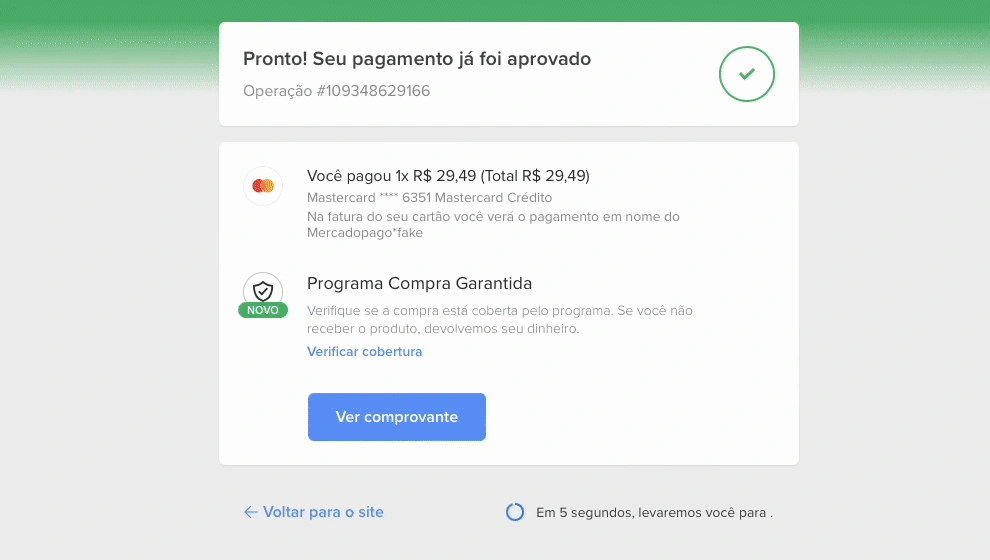
Pagamento aprovado: volte ao pedido
- Confira a mensagem de aprovação.
A demonstração mostra a confirmação na parte superior e o resumo da cobrança logo abaixo.
- Guarde o comprovante, se desejar.
Use Ver comprovante para consultar o documento disponibilizado pelo Mercado Pago.
- Volte ao site do Mineiro.
Aguarde o retorno automático ou use Voltar para o site, quando disponível. Confira Pagamento aprovado no acompanhamento, como na próxima página.
Este é um exemplo de aprovação da demonstração oficial. Não certifica uma venda real da loja. Se o pagamento estiver pendente, em revisão ou recusado, siga a orientação da sua própria tela.
Fonte: Mercado Pago Developers — Checkout Pro. Recorte de tela da demonstração oficial em português, consultada em 20/10/2026. A aparência e as opções podem variar no checkout atual.
TELAS DO SISTEMA COM DADOS DE DEMONSTRAÇÃO • Pedidos e pagamentos simulados em ambiente local; nenhuma cobrança real.
No Mercado Pago, escolha uma das formas oferecidas e conclua o pagamento. Ao voltar, confira o status no acompanhamento.
Antes da confirmação
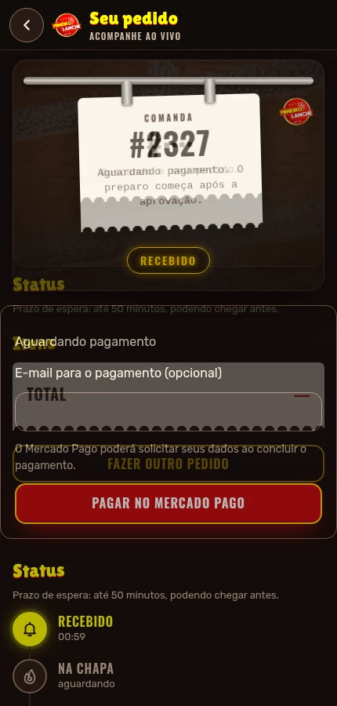
Aguardando pagamento significa que o preparo ainda não foi liberado. O botão Pagar no Mercado Pago permite acessar o pagamento do pedido salvo. O e-mail nessa tela também é opcional.Após a confirmação
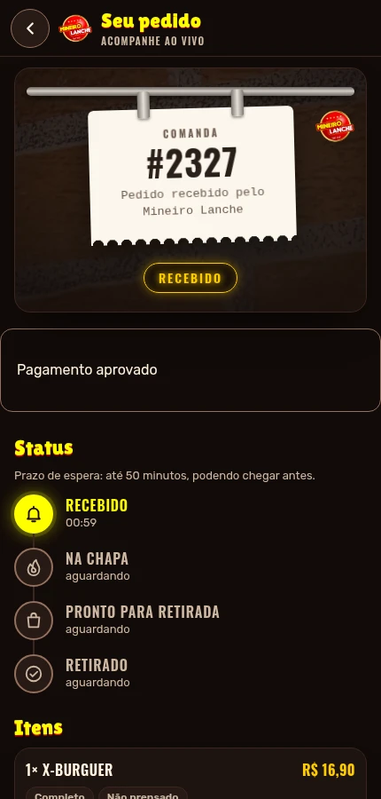
Pagamento aprovado confirma a etapa financeira. A loja recebe a liberação para preparar; o andamento aparece abaixo em Status.Já pagou e continua pendente? Aguarde a atualização e confira o acompanhamento antes de pagar novamente. A consulta com o navegador fechado ocorre a cada minuto. As telas do checkout externo variam conforme o Mercado Pago e o comprador.
TELAS DO SISTEMA COM DADOS DE DEMONSTRAÇÃO • Pedidos e pagamentos simulados em ambiente local; nenhuma cobrança real.
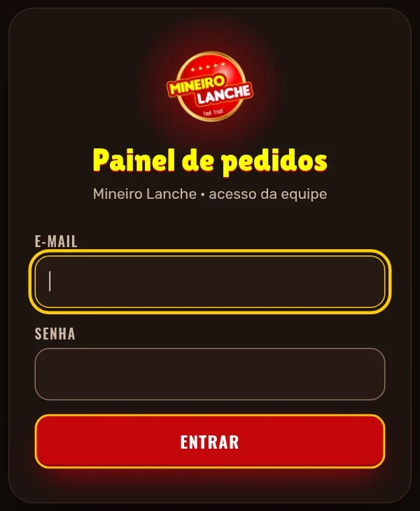
Acesso da equipe
Abra mineirolanches.store/painel/.
- Informe o e-mail e a senha cadastrados para a equipe.
- Clique em Entrar.
- No menu lateral, use Pedidos para acompanhar a operação e Histórico para consultar pedidos anteriores.
A conta “equipe@teste.local” usada nas capturas é somente de demonstração e não é um acesso para o cliente.
Confira se a loja está recebendo pedidos
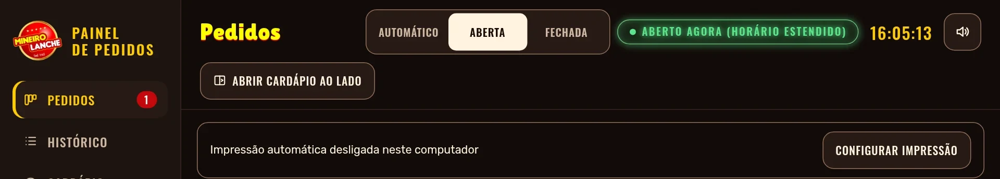
Automático: segue os horários cadastrados.
Aberta: mantém o atendimento aberto manualmente.
Fechada: pausa os pedidos até a equipe alterar o modo.
Horários: segunda, terça e quinta, 19h à meia-noite; sexta, sábado e domingo, 19h à 1h do dia seguinte. Quarta-feira fechada no modo automático.
A tela mostra a posição de cada controle. A opção “Aberta” está selecionada somente no ambiente de demonstração.
TELAS DO SISTEMA COM DADOS DE DEMONSTRAÇÃO • Pedidos e pagamentos simulados em ambiente local; nenhuma cobrança real.
O mesmo pedido pode estar em Novo antes e depois do pagamento. Confira sempre a informação financeira no cartão.
Pendente: aguarde
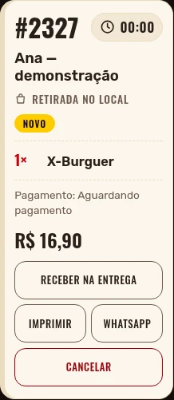
O cartão informa Pagamento: Aguardando pagamento. O botão de aceitar não aparece. Aguarde a aprovação antes de iniciar o preparo.Pago: pode preparar
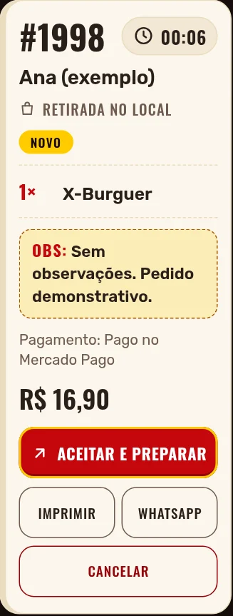
O cartão muda para Pagamento: Pago no Mercado Pago e libera Aceitar e preparar. Clique nesse botão para iniciar o atendimento.Impressão automática: nos pedidos online, aguarda a aprovação; pedidos com pagamento ao receber podem entrar na fila antes do recebimento. Mantenha uma única estação ativa.
Online: a aprovação libera Aceitar e preparar; a equipe avança os status. Para dinheiro e recebimento, consulte as páginas 13 a 16.
TELA DO SISTEMA COM DADOS DE DEMONSTRAÇÃO • Nenhuma cobrança real.
Cancelar o pedido não devolve o dinheiro automaticamente. Após cancelar um pedido pago, um administrador precisa solicitar o estorno.
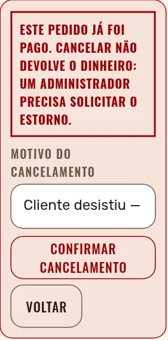
Exemplo: cliente desistiu
- No cartão do pedido, clique em Cancelar.
- Preencha Motivo do cancelamento, por exemplo: “Cliente desistiu”.
- Confira se está cancelando o pedido certo.
- Clique em Confirmar cancelamento.
- Se o pagamento foi aprovado, siga para a próxima página para solicitar a devolução.
Para desistir da ação antes de confirmar, clique em Voltar.
Se o pagamento chegar depois do cancelamento
O pedido não volta sozinho para atendimento. Confira o caso no painel e no Mercado Pago e providencie a devolução quando aplicável.
TELA DO SISTEMA COM DADOS DE DEMONSTRAÇÃO • O estado “pago” foi simulado; nenhuma cobrança real.
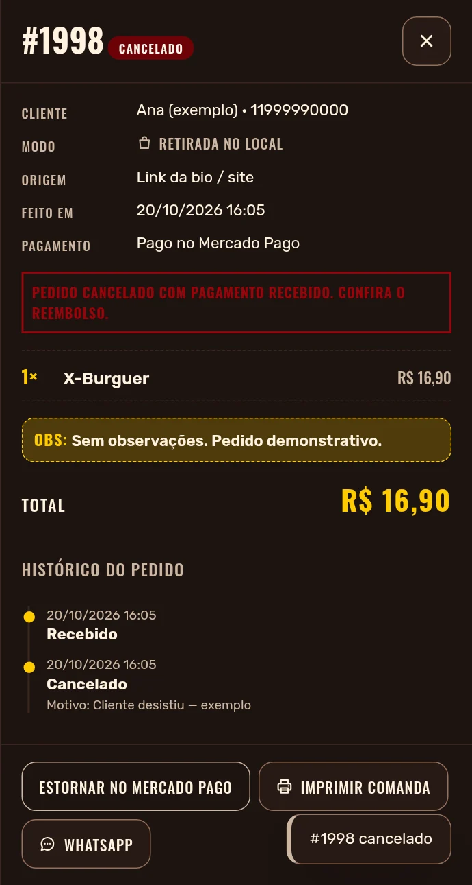
Onde clicar
- Entre com um perfil de administrador.
- No menu lateral, abra Histórico.
- Clique no número do pedido cancelado e pago.
- Confira o cliente, o número e o total.
- Na parte inferior do detalhe, clique em Estornar no Mercado Pago.
- Confirme a operação e aguarde a atualização.
Confira o resultado no painel e no Mercado Pago antes de tentar novamente.
O prazo para o dinheiro chegar ao comprador depende da forma de pagamento e da instituição.
Para devolução parcial, use a conta Mercado Pago da loja.
Primeira venda real: acompanhe a aprovação e compare número do pedido, valor e status no site, no painel e no Mercado Pago. Os exemplos deste guia ilustram as telas do sistema.
TELAS ATUAIS DO SISTEMA COM DADOS FICTÍCIOS • Exemplos locais, sem cobrança real.
Em Pagamento, selecione Pagar na entrega ou Pagar na retirada. Depois, toque em Dinheiro. Essa opção dispensa e-mail e Mercado Pago.
Preciso de troco
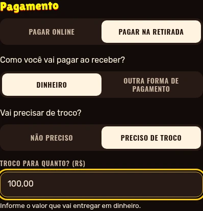
Toque em Preciso de troco e preencha Troco para quanto? com o valor que vai entregar em dinheiro. Exemplo: R$ 100,00 para um pedido de R$ 16,90.Vou pagar o valor exato
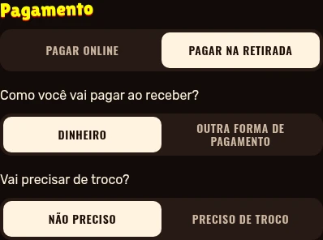
Toque em Não preciso. O campo de valor fica oculto e o pedido registra Sem troco. Essa resposta também é obrigatória para dinheiro.Confira e envie
- Confira o total, incluindo a taxa quando escolher entrega.
- Se pedir troco, informe um valor maior que o total do pedido.
- Toque em Enviar pedido. O pagamento ficará a receber.
Para outro meio presencial, selecione Outra forma de pagamento somente após confirmar com a loja qual meio ela aceita.
TELAS ATUAIS DO SISTEMA COM DADOS FICTÍCIOS • Exemplos locais, sem cobrança real.
Um pedido em dinheiro pode seguir para preparo sem pagamento online. A confirmação financeira deve acontecer apenas quando a loja receber o valor.
Antes de receber
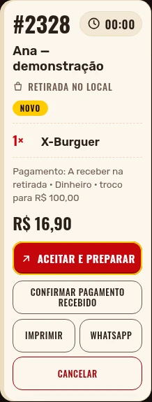
O cartão mostra A receber na retirada · Dinheiro e o troco. Use Aceitar e preparar para iniciar o atendimento; o pagamento continua em aberto.Depois de receber
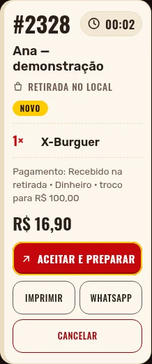
Após receber, clique em Confirmar pagamento recebido, confira o total e confirme a ação. O cartão passa a indicar Recebido na retirada.Não confirme apenas porque o pedido saiu para entrega. Aguarde a conferência do dinheiro ou do outro meio recebido. A confirmação da entrega pelo motoboy é uma ação separada.
Para entrega, o cartão usa A receber na entrega. A informação do troco acompanha o pedido nos dois casos.
TELAS ATUAIS DO SISTEMA COM DADOS FICTÍCIOS • Exemplos locais, sem cobrança real.
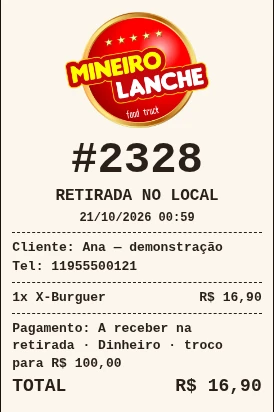
O que conferir na comanda
- Confira o número, os itens e o total.
- Leia a forma de pagamento: A receber na entrega/retirada · Dinheiro.
- Confira o troco: troco para R$ 100,00 ou Sem troco.
- Separe o troco antes da saída, quando necessário.
Se a imagem mostra Retirada no local, o exemplo será buscado na loja. Uma entrega também leva endereço e taxa na comanda.
Cliente desistiu do pagamento online?
- Confira se o pagamento ainda está pendente.
Na tela de pedidos, use Receber na entrega, quando esse botão estiver disponível.
- Confirme a alteração.
O sistema consulta e encerra o checkout anterior antes de liberar o pagamento ao receber.
- Confira a nova indicação no cartão.
Ela deve mostrar A receber. Combine a forma escolhida com o cliente e confira o troco antes de despachar.
Se o pagamento já estiver aprovado, não cobre novamente. Confira o pedido no painel e no Mercado Pago.
TELAS ATUAIS DO SISTEMA COM DADOS FICTÍCIOS • Exemplos locais, sem cobrança real.
Abra a tela do entregador conectado antes de sair e aguarde Pedidos carregados. Confira endereço, total e troco dos pedidos atribuídos.
Confira quanto cobrar
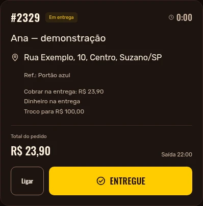
O pedido mostra Cobrar na entrega, Dinheiro na entrega e Troco para R$ 100,00. Neste exemplo fictício, o total é R$ 23,90, incluindo entrega.Sem internet: confirmação fica salva
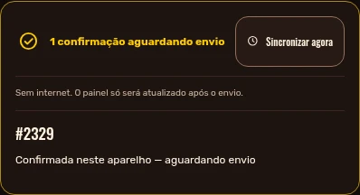
Ao concluir a entrega sem rede, use Entregue ou a leitura do QR. A tela mostra 1 confirmação aguardando envio. O registro permanece neste aparelho.Quando a conexão voltar
- Mantenha a tela aberta para enviar a confirmação ou toque em Sincronizar agora.
- Confira a mensagem Tudo sincronizado antes de encerrar o turno.
- A loja confere o dinheiro e registra Confirmar pagamento recebido no painel.
Confirmar Entregue registra a entrega; não dá baixa automática no pagamento em dinheiro. Se houver pendência de sincronização, mantenha os dados do navegador e avise a loja.